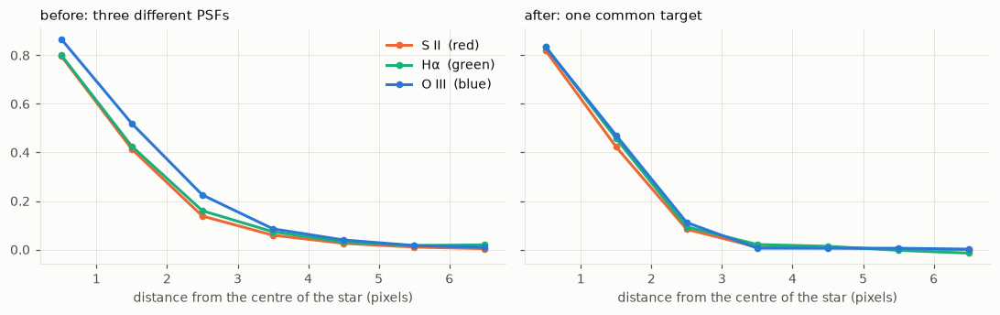
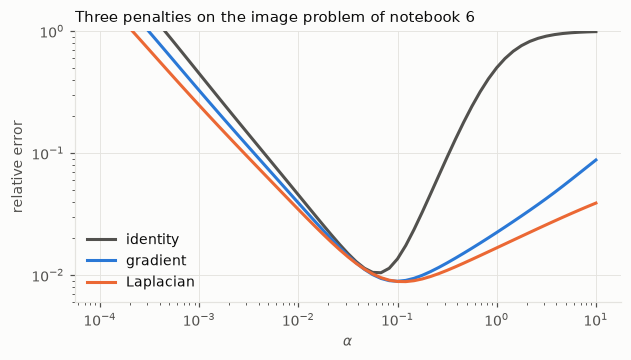
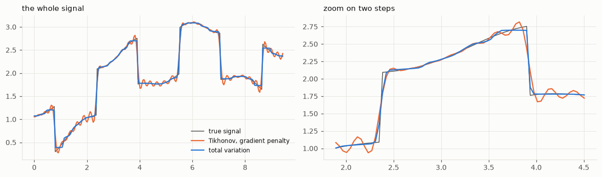

import numpy as np
from numpy.fft import fft2, ifft2
from scipy import ndimage
import matplotlib.pyplot as plt
import hnotools as hno
hno.style()
rng = np.random.default_rng(0)
data = hno.load_sample()7 Colour images and smoothing norms
Companion notebook to Hansen, Nagy & O’Leary, Deblurring Images, chapter 7, with the penalties of H. Talbot’s Lecture Notes on Optimisation, chapter 3.
Chapter 7 of the book opens three doors beyond the basic method. This notebook walks through each of them.
What you will take away
- A colour image adds a second, small blurring matrix that mixes the channels; the two combine as a Kronecker product.
- In our telescope images the channels do not mix, but each has its own PSF. Bringing them to a common, declared PSF removes colour fringes.
- The Tikhonov penalty \(\|x\|^2\) can be replaced by \(\|L x\|^2\), where \(L\) takes derivatives: the result prefers smooth images to small ones.
- Squared penalties round off edges whatever \(L\) is. Penalising \(\|L x\|_1\) instead keeps them, at a price: no closed-form solution any more.
7.1 Colour: blurring across channels
A colour image has three channels. Two kinds of blur can affect it.
- Within each channel: the spatial blur we have studied, matrix \(A\).
- Across channels: some of the red light is recorded as green, and so on. This happens in colour sensors and in film. It is described by a \(3 \times 3\) matrix \(A_{\text{color}}\) whose row \(i\) says how the three true colours contribute to recorded colour \(i\).
If every channel has the same spatial blur, the full model is a Kronecker product, \((A_{\text{color}} \otimes A)\,x = b\): mixing and blurring act on different “axes” of the data and do not interfere.
scene = np.stack([c / np.percentile(c, 99.5) for c in data['mean_sho'].astype(float)]) # 3 x 256 x 256
A_color = np.array([[0.70, 0.20, 0.10],
[0.15, 0.70, 0.15],
[0.10, 0.20, 0.70]]) # rows sum to 1: no light lost
psf = hno.gaussian_psf(scene.shape[1:], fwhm=3.0)
mix = lambda M, img: np.einsum('ij,jhw->ihw', M, img) # apply a 3 x 3 matrix to the channels
blur3 = lambda img: np.stack([hno.blur(c, psf) for c in img]) # blur each channel
b1 = blur3(mix(A_color, scene)) # mix, then blur
b2 = mix(A_color, blur3(scene)) # blur, then mix
print('the two orders give the same image:', np.allclose(b1, b2))
unmixed = mix(np.linalg.inv(A_color), b1) # undo the mixing: a 3 x 3 inverse
print('after unmixing, each channel is just a blurred channel:', np.allclose(unmixed, blur3(scene)))
print(f'condition number of A_color: {np.linalg.cond(A_color):.1f}')the two orders give the same image: True
after unmixing, each channel is just a blurred channel: True
condition number of A_color: 2.0Because the two operations commute, the inverse problem splits: first undo the colour mixing, which is a well-conditioned \(3 \times 3\) system, then deblur each channel separately with everything we already know. The hard part is still the spatial blur.
7.2 Our case: no mixing, but three different PSFs
Our colour images are made differently (notebook 2): three separate series of exposures through three narrow filters, on different nights. There is no cross-channel mixing, \(A_{\text{color}} = I\). But the atmosphere was not the same on each night, so each channel has its own PSF. Measure it on two unsaturated stars:
sho = data['mean_sho'].astype(float)
names = ('S II (red)', 'Hα (green)', 'O III (blue)')
stars = ((161, 169), (98, 217))
psf_params = []
for name, c in zip(names, sho):
fits = [hno.fit_star(c, r, col) for r, col in stars]
fwhm, beta = np.mean([f['fwhm'] for f in fits]), np.mean([f['beta'] for f in fits])
psf_params.append((fwhm, beta))
print(f'{name:14s} FWHM {fwhm:.2f} px = {fwhm * float(data["pixel_scale"]):.2f} arcsec')S II (red) FWHM 2.68 px = 2.04 arcsec
Hα (green) FWHM 2.73 px = 2.09 arcsec
O III (blue) FWHM 3.21 px = 2.45 arcsecThe oxygen channel is about 20 % blurrier than the other two. In a colour composite, every star is then a sharp red-green core inside a wider blue disc: a colour fringe. The radial profiles of a star in the three channels, each scaled to its peak, show it directly:
def star_profile(c, row=161, col=169, half=10):
"""Radial profile of a star, background removed, scaled to the fitted peak."""
f = hno.fit_star(c, row, col)
stamp = c[row - half:row + half + 1, col - half:col + half + 1]
yy, xx = np.indices(stamp.shape) - half
dist = np.hypot(yy - (f['row'] - row), xx - (f['col'] - col)).ravel()
values = ((stamp - f['bg']) / f['amp']).ravel()
edges = np.arange(0, 7.5, 1.0)
return 0.5 * (edges[:-1] + edges[1:]), np.array([np.median(values[(dist >= a) & (dist < b)]) for a, b in zip(edges[:-1], edges[1:])])
def plot_profiles(ax, channels, title):
for c, name, colour in zip(channels, names, (hno.ORANGE, hno.AQUA, hno.BLUE)):
r, prof = star_profile(c)
ax.plot(r, prof, 'o-', color=colour, ms=4, label=name)
ax.set_xlabel('distance from the centre of the star (pixels)'); ax.set_title(title, loc='left')The remedy uses the target idea of notebook 6. Choose one target PSF for the three channels, and filter each channel with its own measured PSF \(K_c\):
\[X_c = T\,\frac{\bar K_c\, Y_c}{|K_c|^2 + \lambda} .\]
After this, all three channels show the sky through the same PSF \(T\). We declare the width of the sharpest channel as the common target.
target = min(f for f, _ in psf_params)
T = hno.psf2otf(hno.gaussian_psf(sho.shape[1:], target))
matched = []
for (fwhm, beta), c in zip(psf_params, sho):
K = hno.psf2otf(hno.moffat_psf(c.shape, fwhm, beta=beta))
matched.append(ifft2(T * np.conj(K) * fft2(hno.taper(c)) / (np.abs(K)**2 + 1e-3)).real)
matched = np.stack(matched)
print(f'declared common target: {target:.2f} px')
for name, c in zip(names, matched):
print(f'{name:14s} delivered {np.mean([hno.fit_star(c, r, col)["fwhm"] for r, col in stars]):.2f} px')
fig, ax = plt.subplots(1, 2, figsize=(10, 3.2), sharey=True)
plot_profiles(ax[0], sho, 'before: three different PSFs'); ax[0].legend()
plot_profiles(ax[1], matched, 'after: one common target')
fig.tight_layout()declared common target: 2.68 px
S II (red) delivered 2.75 px
Hα (green) delivered 2.79 px
O III (blue) delivered 2.87 px
The three widths now agree to within 4 %, against 20 % before, and the profiles fall on top of each other: the fringe is gone. (The widths are a few percent above the target because of the regularisation \(\lambda\); notebook 6 showed how to trade that against noise.) For a scientist this matters far beyond looks: the ratio of two channels measures the physical state of the gas, and a ratio of two images taken through different PSFs is wrong near every sharp feature.
This “PSF matching to a declared target” is one of the things our project does to every image.
7.3 Tikhonov revisited: penalise the derivative
Notebook 6 penalised the size of the solution, \(\alpha^2\|x\|^2\). But why should a good image be small? A more sensible belief is that a good image is smooth: neighbouring pixels have similar values. The lecture notes write the general form
\[x_\alpha = \arg\min_x \;\|A x - b\|^2 + \alpha^2 \|L x\|^2 , \qquad (A^{\mathsf T} A + \alpha^2 L^{\mathsf T} L)\,x = A^{\mathsf T} b ,\]
with \(L\) the identity (small solution), the gradient (small variations) or the Laplacian (small curvature).
With a fast transform nothing changes but the filter. For reflexive boundaries, \(L^{\mathsf T} L\) is diagonalised by the same cosine transform as \(A\), and the filter factors become
\[\phi = \frac{S^2}{S^2 + \alpha^2\, \ell^2}, \qquad \ell^2_{\text{gradient}}(k, l) = \bigl(2 - 2\cos\tfrac{\pi k}{n}\bigr) + \bigl(2 - 2\cos\tfrac{\pi l}{n}\bigr), \qquad \ell^2_{\text{Laplacian}} = \bigl(\ell^2_{\text{gradient}}\bigr)^2 .\]
\(\ell^2\) is zero at frequency zero and grows with frequency: the penalty leaves the smooth part of the image alone and charges only for the fine detail, which is where the noise lives.
x_true = data['hubble'].astype(float)
psf25 = hno.gaussian_psf((25, 25), fwhm=6.0)
b_img = ndimage.convolve(x_true, psf25, mode='reflect') + 0.002 * rng.standard_normal(x_true.shape)
S, B = hno.dct_eigenvalues(psf25, b_img.shape), hno.dct2(b_img)
n = b_img.shape[0]
one_d = 2 - 2 * np.cos(np.pi * np.arange(n) / n)
grad2 = one_d[:, None] + one_d[None, :]
penalties = {'identity': np.ones_like(grad2), 'gradient': grad2, 'Laplacian': grad2**2}
alphas = np.logspace(-4, 1, 61)
fig, ax = plt.subplots(figsize=(6.4, 3.2))
best = {}
for (name, L2), col in zip(penalties.items(), (hno.INK2, hno.BLUE, hno.ORANGE)):
errs = [hno.rel_error(hno.idct2(S * B / (S**2 + a**2 * L2 + 1e-300)), x_true) for a in alphas]
best[name] = (alphas[np.argmin(errs)], min(errs))
ax.loglog(alphas, errs, color=col, label=name)
print(f'{name:10s} best alpha {best[name][0]:.3f}: relative error {best[name][1]:.4f}')
ax.set_ylim(0.006, 1); ax.set_xlabel('$\\alpha$'); ax.set_ylabel('relative error'); ax.legend()
ax.set_title('Three penalties on the image problem of notebook 6', loc='left');identity best alpha 0.068: relative error 0.0105
gradient best alpha 0.100: relative error 0.0089
Laplacian best alpha 0.121: relative error 0.0088
The derivative penalties do better than the identity, by about 15 % here, and the two of them are close to each other. A real gain, obtained for free, but not a revolution: all three are squared penalties, and they share a limitation that the next section makes visible.
7.4 Other norms: keeping the edges
Back to the 1-D signal, which has sharp steps. Solve the three Tikhonov problems with explicit matrices, each at its best \(\alpha\):
N = 250
s, signal = hno.lecture_signal(N)
A = hno.blur_matrix_1d(hno.gaussian_kernel_1d(4.0, 40), N)
b = A @ signal + 2e-4 * rng.standard_normal(N)
D = np.diff(np.eye(N), axis=0) # first differences: (N-1) x N
operators = {'identity': np.eye(N), 'gradient': D, 'Laplacian': np.diff(np.eye(N), 2, axis=0)}
def tikhonov_general(A, b, L, alpha):
return np.linalg.solve(A.T @ A + alpha**2 * L.T @ L, A.T @ b)
solutions = {}
for name, L in operators.items():
err, a = min((hno.rel_error(tikhonov_general(A, b, L, a), signal), a) for a in np.logspace(-5, 1, 61))
solutions[name] = tikhonov_general(A, b, L, a)
print(f'{name:10s} best alpha {a:.4f}: relative error {err:.4f}')identity best alpha 0.0010: relative error 0.0419
gradient best alpha 0.0010: relative error 0.0421
Laplacian best alpha 0.0013: relative error 0.0422Three penalties, the same error to within one percent. On this signal the choice of \(L\) changes nothing, because the error is entirely in the steps, and a squared penalty hates steps: one jump of height \(h\) costs \(h^2\), while the same rise spread over ten samples costs ten times \((h/10)^2\), that is ten times less. Squared penalties always prefer the ramp to the step.
The cure is to penalise the absolute value of the derivative instead of its square:
\[x = \arg\min_x \;\|A x - b\|^2 + \alpha \,\|D x\|_1 , \qquad \|D x\|_1 = \sum_i |x_{i+1} - x_i| .\]
Now a jump of height \(h\) costs \(h\) however it is spread: steps are no longer punished. This is total variation regularisation.
The price: the problem is not quadratic any more, so there is no linear system and no filter. We need an iterative algorithm. Here is one in a few lines, of the majorise-minimise family described in chapter 4 of the lecture notes: replace \(|t|\) by a quadratic that touches it at the current solution, solve that Tikhonov problem, repeat.
def total_variation(A, b, alpha, iterations=60, eps=1e-3):
"""Total-variation deblurring by majorise-minimise: a sequence of
weighted Tikhonov problems. Notebook 9 explains why this works."""
x = tikhonov_general(A, b, D, 1e-2) # any reasonable start
for _ in range(iterations):
w = 1.0 / np.sqrt((D @ x)**2 + eps**2) # large weight where the signal is flat
x = np.linalg.solve(A.T @ A + alpha * D.T @ (w[:, None] * D), A.T @ b)
return x
x_tv = total_variation(A, b, alpha=1e-3)
print(f'total variation: relative error {hno.rel_error(x_tv, signal):.4f}')
fig, ax = plt.subplots(1, 2, figsize=(11, 3.3))
for a, (lo, hi) in zip(ax, ((0, N), (50, 120))):
a.plot(s[lo:hi], signal[lo:hi], color=hno.INK2, lw=1.0, label='true signal')
a.plot(s[lo:hi], solutions['gradient'][lo:hi], color=hno.ORANGE, lw=1.5, label='Tikhonov, gradient penalty')
a.plot(s[lo:hi], x_tv[lo:hi], color=hno.BLUE, lw=1.5, label='total variation')
ax[0].set_title('the whole signal', loc='left'); ax[0].legend(fontsize=8)
ax[1].set_title('zoom on two steps', loc='left')
fig.tight_layout()total variation: relative error 0.0215
Half the error, and the steps are steps again. The same data, the same blur, the same noise: only our belief about the unknown changed, from “smooth” to “piecewise smooth, with a few jumps”.
Two warnings before you fall in love with it.
- The result is exactly as good as the belief. Total variation turns gentle slopes into small staircases, and would do damage to an image that really is smooth, such as a nebula.
- We have left the world of filters. There are no filter factors to plot and no Picard plot to tell us what came from the data and what came from the penalty. That loss of transparency is the price of every powerful prior, and it is the reason our project insists on verifying its results.
Your turn
- A badly conditioned colour matrix. In section 7.1, make the channels mix almost completely (every entry of
A_colorclose to 1/3). What happens to the condition number, and to the unmixed image if you add a little noise tob1first? - Ratios. Compute the ratio image O III / S II before and after the PSF matching of section 7.2, and display both around the star. Where does the unmatched ratio go wrong?
- Which target? Redo the matching with the widest channel’s width as target, then with 70 % of the sharpest. Compare the delivered widths and the noise in a dark region of the image. Which channels pay, and how?
- Why zero at zero? Explain why \(\ell^2_{\text{gradient}}(0, 0) = 0\) means that the gradient penalty does not care about the mean brightness of the image. Why is that an advantage for astronomical images, which sit on a bright sky background?
- Verify the eigenvalues. For \(n = 16\), build the 1-D first-difference matrix with reflexive boundaries and check numerically that \(D^{\mathsf T} D\) is diagonalised by the cosine transform, with eigenvalues \(2 - 2\cos(\pi k / n)\).
- Staircases. Apply
total_variationto a blurred, noisy ramp (a straight slope with no step). What does the solution look like? Now you know when not to use it.